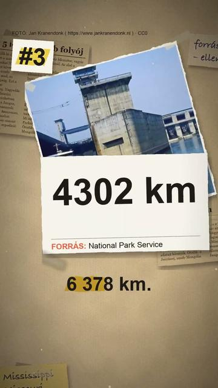

Megnézem a YouTube-onA világ 5 leghosszabb folyója
Röviden: Melyik a világ leghosszabb folyója? A válasz attól függ, kit kérdezel: egy folyó hossza azon múlik, hol jelölik ki a forrását és a torkolatát.
Melyik a világ leghosszabb folyója? A válasz attól függ, kit kérdezel: egy folyó hossza azon múlik, hol jelölik ki a forrását és a torkolatát. Az 1–4. helyet az amerikai Nemzeti Parkszolgálat (NPS) adatai szerint mutatjuk: a Nílus 6 693 km, az Amazonas 6 436 km, a Jangce 6 378 km, a Mississippi és a Missouri együtt 5 970 km. Az 5. helyet az NPS nem adja meg; az Európai Űrügynökség a Mongóliában eredő Jenyiszejt nevezi ötödiknek. 2007-ben brazil kutatók egy perui expedíció után azt állították, hogy az Amazonas 6 800 km, vagyis hosszabb a Nílusnál. Az amerikai Földtani Intézet (USGS) listáján pedig a Nílus nagyjából 45 km-rel rövidebb, mint az NPS-nél.
Források
- National Park Service: Mississippi River Facts
- U.S. Geological Survey: Rivers of the world: World's longest rivers
- ESA: Earth from Space: A green Siberia
- BBC News: Amazon river 'longer than Nile' (2007. 6. 16.)
4 forrás · Hogyan ellenőrzünk?
Hibát találtál? Írd meg nekünk, megnézzük.
Képek és kreditek
• a Nílus és a deltája éjjel, a Nemzetközi Űrállomásról – NASA, Public domain (https://creativecommons.org/publicdomain/mark/1.0/) https://commons.wikimedia.org/?curid=82571459
• Egyiptom éjjel az űrből: a városok fényei rajzolják ki a Nílus völgyét és deltáját (NASA) – NASA on The Commons, Public domain (https://www.flickr.com/commons/usage/) https://commons.wikimedia.org/?curid=95237339
• a Nílus Kairóban, a Gezíra-szigetnél – Vyacheslav Argenberg, CC BY 4.0 (https://creativecommons.org/licenses/by/4.0/) https://commons.wikimedia.org/?curid=121354658
• az Amazonas Óbidosnál, űrsiklóról fényképezve (NASA, 1996) – NASA, Public domain (https://creativecommons.org/publicdomain/mark/1.0/) https://commons.wikimedia.org/?curid=542718
• délutáni felhők az amazóniai esőerdő fölött (NASA, MODIS) – NASA / Jeff Schmaltz, MODIS (GSFC), Public domain (https://creativecommons.org/publicdomain/mark/1.0/) https://commons.wikimedia.org/?curid=7658141
• a Jangce a Csütang-szorosban – Tan Wei Liang Byorn, CC BY 3.0 (https://creativecommons.org/licenses/by/3.0/) https://commons.wikimedia.org/?curid=8698139
• hajózsilip a Jangcén – Jan Kranendonk ( https://www.jankranendonk.nl ), CC0 (https://creativecommons.org/publicdomain/zero/1.0/) https://commons.wikimedia.org/?curid=196063935
• a Mississippi Dél-Louisianában – Tom Hilton, CC BY 2.0 (https://creativecommons.org/licenses/by/2.0/) https://commons.wikimedia.org/?curid=123344090
• átkelés a Mississippin a California Zephyr vonatról (2022) – Missvain, CC BY 4.0 (https://creativecommons.org/licenses/by/4.0/) https://commons.wikimedia.org/?curid=122817416
• a Jenyiszej Krasznojarszknál – Vyacheslav Argenberg, CC BY 4.0 (https://creativecommons.org/licenses/by/4.0/) https://commons.wikimedia.org/?curid=183488385
• a Jenyiszej Gyivnogorszknál – Vyacheslav Argenberg, CC BY 4.0 (https://creativecommons.org/licenses/by/4.0/) https://commons.wikimedia.org/?curid=183828950